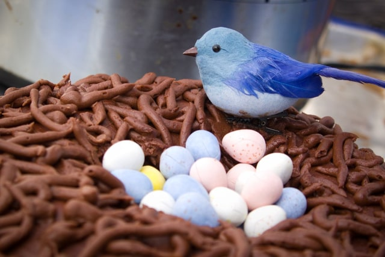
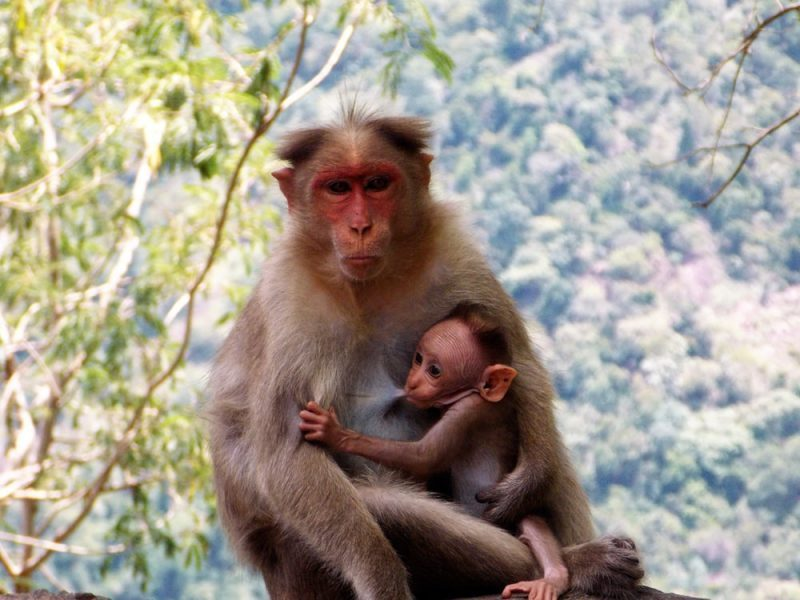
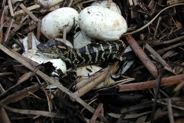

MATERI
PERKEMBANGBIAKAN SECARA GENERATIF PADA HEWAN
Perkembangbiakan hewan secara generative adalah perkembangbiakan hewan melalui proses pembuahan. Perkembangbiakan generative melibatkan sel kelamin jantan dan betina. Perkembangbiakan hewan secara generatif dapat dibedakan menjadi tiga macam, yaitu ovipar (bertelur), vivipar (melahirkan), dan ovovivipar (bertelur dan melahirkan). Masing-masing perkembangbiakan tersebut memiliki ciri yang membedakan satu dengan yang lainnya
1. Ovipar (Bertelur)

Perkembangbiakan secara ovipar merupakan perkembangbiakan hewan dengan cara bertelur. Induk betina mengeluarkan telur yang sudah dibuahi. Setelah beberapa waktu, telur tersebut akan tumbuh menjadi individu yang baru. Anak hewan akan keluar dari telur dengan memecahkan cangkang.
Ciri-ciri hewan ovipar :
a. Mengerami telurnya
b. Tidak memiliki daun telinga
c. Tidak memiliki kelenjar susu
d. Tidak menyusui anaknya
Beberapa contoh hewan ovipar diantaranya: kelompok unggas, kelompok ikan, kelompok reptil, dan kelompok amfibi.
2. Vivipar (Melahirkan)

Vivipar adalah hewan yang berkembang biak dengan cara beranak atau melahirkan adalah hewan mamalia atau menyusui. Hewan yang berkembang biak secara vivipar, pertama kali akan melakukan proses fertilisasi (pembuahan). Fertilisasi adalah peristiwa peleburan sel kelamin janta dan sel kelamin betina. Hasil pembuahan tersebut akan membentuk zigot yang kemudian berkembang menjadi embrio. Embrio selanjutnya akan mengalami penyempurnaan bentuk fisik di dalam Rahim induk dalam bentuk janin, sampai pada saatnya dilahirkan.
Ciri-ciri hewan vivipar :
a. Memiliki kelenjar susu
b. Memiliki daun telinga
c. Tubu ditutupi dengan bulu atau rabut
d. Pada umumnya menyusui (
mamalia
)
3.
Ovovivipar(Bertelur dan Melahirkan)

adalah hewan yang berkembang biak dengan cara bertelur dan beranak. Janin hewan berkembang dala telur, namun telur itu berada di dalam tubuh induknya. Setelah telur itu menetas baru induk melahirkan seekor spesies baru yang sejenis.
Main Content